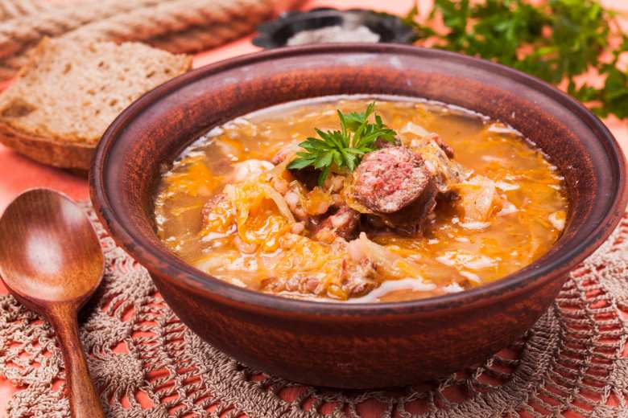

Sauerkraut soup - Kapustnica

Sauerkraut soup, a classic christmas soup,
has become one of the favorites of slovak cuisine.
Time: 50 minutes
Equipment:
Ingredients:
- 300g of sauerkraut
- 100g of bacon
- 2 pieces of sausage
- 1 big onion
- 4 potatoes
- 4 garlic clovers
- 1/4 of small white cabbage
- 1tbsp beef lard
- 1.5tbsp flour
- salt
- black pepper
- cumin
Steps:
- In a pot we'll sizzle diced bacon.
- When the bacon starts to turn pink, we add finely cut onion, bit of salt, pepper, cumin.
- When our onion starts to look glass-like, add beef lard and sprinkle with flour.
- Gradually add 1.5l of water, diced cabbage, sliced sausages and potatoes.
- We cook until the potatoes become soft (+-20 min).
- Next we add cut sauerkraut and continue cooking for 15 minutes.
- A minute before the end of 15min time, we add pressed garlic, and another bit of salt.
Serving: We serve our sauerkraut soup with fresh bread as a side dish.
back to main page